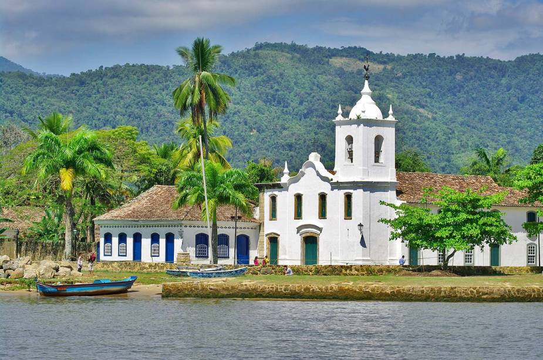

Bela cidade colonial,considerada Patrimônio Histórico Nacional, preserva até hoje os seus inúmeros encantos naturais e arquitetônicos. Passear pelo Centro Histórico de Paraty é entrar em outra época, onde o caminhar é vagaroso devido às pedras "pés-de-moleque" de suas ruas. As construções de seus casarões e igrejas traduzem um estilo de época e os misteriosos símbolos maçônicos que enfeitam as suas paredes nos levam a imaginar como seria a vida no Brasil de antigamente. A proibição do tráfego de automóveis no Centro contribui para esta viagem pelo "Túnel do tempo".
